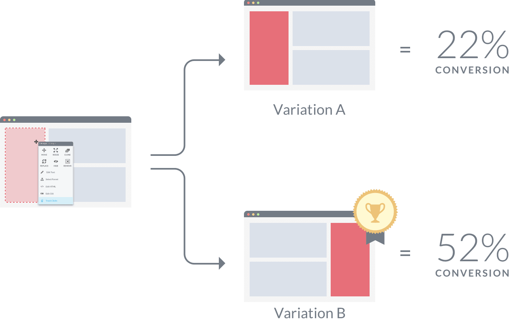
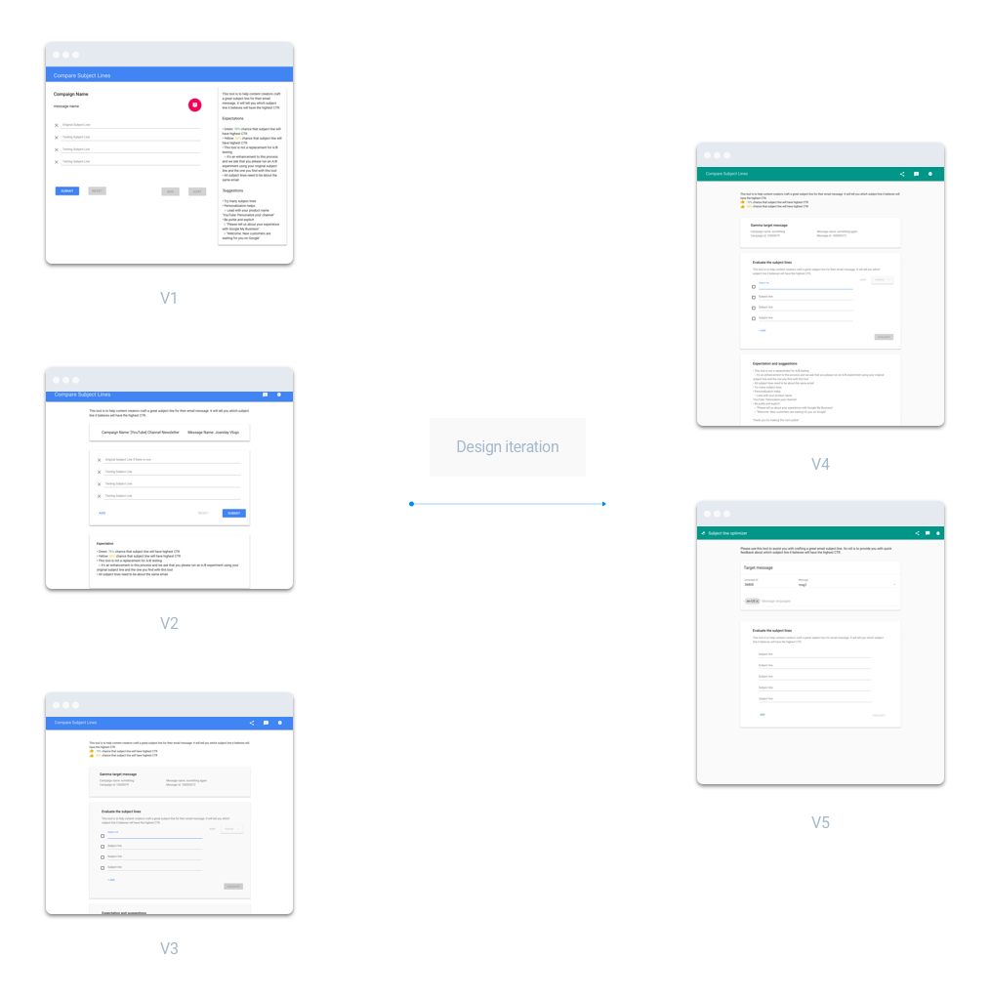
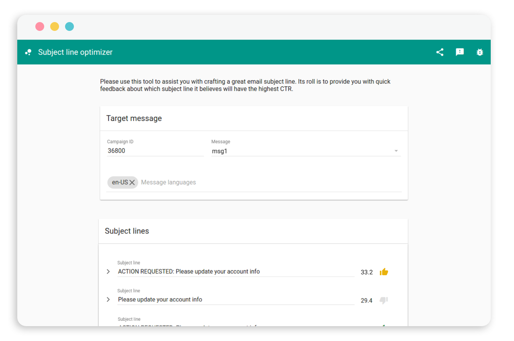

This project is one of the internship projects I worked on at Google while I was interning at the Ads team. It is initially called Machine Learning Compare Subject Line Tool, which switched to Subject Line Optimizer later on.
A product walk-through
Even though this tool is already launched, since I no longer have access to Google internal products, I can only show the prototype here.
What is Gamma? Why we need a subject-line optimizer?
Gamma is an email marketing campaign management tool. Google marketers send out tons a newsletters in different product areas, and they run A/B testing through Gamma to figure out the possible click rate.
Fail fast and break things, design iterations
Within 2 weeks, this product went through many iterations. I first designed it out on whiteboard while discussing the user journey and why we need this tool with PM and engineer. I then designed it out and send it to product critique and testings to do fast and several rounds of iterations.
There was a lot of different design solutions, so I weighed them out by considering the tradeoffs. Many decisions were made in this process.
End result, what I learned, future steps
It is launched! I was so excited to see my name as UX Designer on the Google Ads team newsletter.
It is not a perfect product. If I have more time, I spend more time on certain features and make the tool better. I would also want to know the data of people using it, to see whether this tool is really helping them or not.